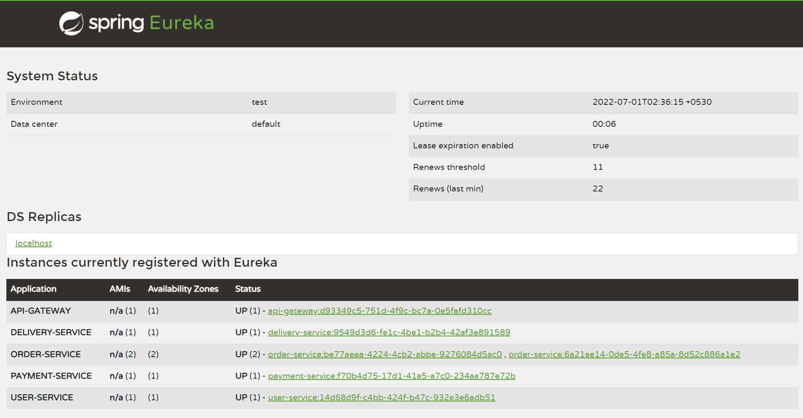
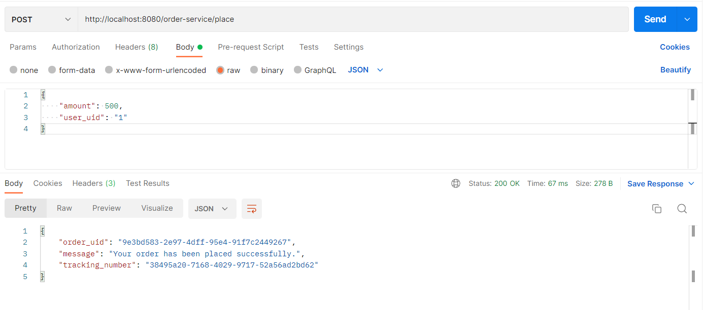

Example series
Final testing of Spring boot microservice example Last updated: 2019-06-01
Overview
So far, we have implemented eureka-server, api-gateway and other four utility microservices. in this page we will be running the whole set of applications together and make a request to place an order. this is the typical example that we can see when you are moving to the microservice architecture. after successfully running this simple set of application package, the advanced topics will be studied in the next series of blog by using SatackSaga framework.
Running services
there is no order when run the project and the services will be talked to each other when they are run. but for your convenience, you can run each project for following order.
- eureka-service
- api-gateway-service
- user-service
- payment-service
- delivery-service
- order-service
we have run two instances of order-service for your understanding. if you want, you can run any of servers any number of times.
Now we are going to test the place order request by using postman.
if you don't have postman, you can use commandline with curl.
The request has been processed successfully, and you can see the response with success message and the tracking number.
so far, we have implemented all the services by imagining only about the success scenario. but, can have failure situations as well. the request goes through 4 servers. just think one of services has been downed. as an example, the user-service goes down after doing success the payment process. or all the services are up and running. but one of the database connections is lost. then what we can do? Either we have to stop the execution further. but we can't do it. the reason is that the request has been processed by some services already. if we stop the execution of the request, we have to have a compensation for all the processes that were executed (proceed) before the stop otherwise some data is in some databases and some data was missed. or if we have no compensation process, we have to wait for the connection to be back. In that sense, microservice architecture is not easy as you thought in a lot of cases. that's why the Saga design pattern is coming into the picture. Saga is not a framework. it is just a design pattern. even though we follow the Saga design pattern manually, we have face lots of challenges. it is not easy to handle in manually. to overcome those challenges easily, the StackSaga framework has been designed.
If you need to read about StackSaga further, read this: